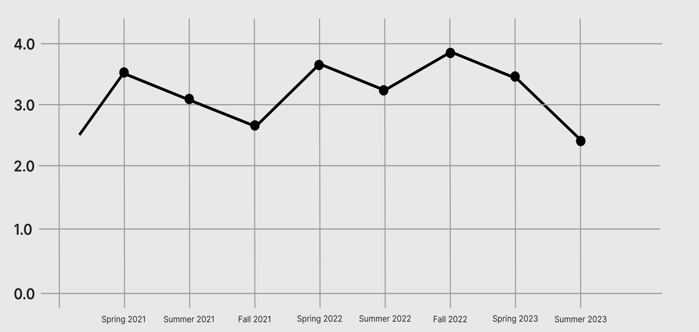

Course Objectives:
- Introduction to Computer Science:
Understand the fundamental concepts and principles of computer science.
Learn the basics of programming and algorithm design.
Develop problem-solving skills using computational methods.
- Data Structures and Algorithms:
Master various data structures such as arrays, linked lists, stacks, and queues.
Analyze and implement efficient algorithms for sorting, searching, and data manipulation.
Apply data structures and algorithms to solve real-world computing problems.
- Programming Languages and Paradigms:
Explore different programming languages and paradigms.
Develop proficiency in at least one high-level programming language.
Understand the strengths and weaknesses of different programming approaches.
-
Database Management Systems:
Learn the principles of database design and normalization.
Gain expertise in using relational database management systems (RDBMS).
Develop skills in SQL for data querying and manipulation.
Overall Student performance:
